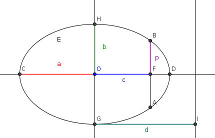
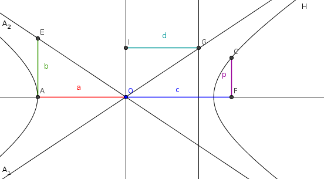

| Choisissez votre langue ! | Choose your language ! |
En clair la parabole peut être considérée comme l'ensemble des points équidistants d'une droite et d'un point.
Nous cherchons maintenant une propriété analogue pour les autres sections coniques.
Une autre propriété des sections coniques (non circulaires).
Considérons le cas où la section conique (conique 'historique' donc) est soit une ellipse non circulaire, soit une hyperbole. Le premier curseur vous permet de déplacer M sur la conique.Avec la souris vous pouvez faire varier l'angle de vue de la figure.
Le second curseur vous permet de faire varier l'angle θ du cône .
Nous faisons une figure correspondant au cas de l'ellipse, la démonstration est tout à fait analogue pour l'hyperbole.
Cliquez l'image ci-après pour ouvrir une appliquette dans une nouvelle fenêtre.
Clearly the parabola can be considered as the set of points equidistant from a straight line and a point.
We are now looking for an analogous property for the other conic sections.
Another property of conic (non-circular) sections.
Consider the case where the conic section (thus 'historical' conic) is either a non-circular ellipse or a hyperbola. The first slider allows you to move M on the conic.With the mouse on a computer you can vary the viewing angle of the figure.
The second slider allows you to vary the angle θ of the cone.
We draw a figure corresponding to the case of the ellipse, the demonstration is completely analogous for the hyperbola.
Click the image below to open an applet in a new window.
Cela s'applique en particulier aux paraboles pour lesquelles ce rapport vaut exactement 1.
This applies in particular to parabolas for which this ratio is exactly 1.
Lien avec les coniques 'algébriques' (courbes du second degré).
Le résultat principal est le suivant :Link with 'algebraic' conics (quadratic curves).
The main result is the following:- C'est une ellipse si e < 1.
- C'est une parabole si e=1.
- C'est une hyperbole si e > 1.
- It's an ellipse if e < 1.
- It's a parabola if e=1.
- It's a hyperbola if e > 1.
démonstration
Dans un repère orthonormé où les coordonnées de F sont (d,0), et l'équation de Δ est x=0, le point M de coordonnées (x,y) appartient au lieu si et seulement si :\( \displaystyle \left( {x - d} \right)^{2} + y^{2} = e^{2}x^{2} \)
C'est à dire :\( \displaystyle \left( {1 - e^{2}} \right)x^{2} + y^{2} - 2{dx} = - d^{2} \)
ou encore\( \displaystyle x^{2}\left( {1 - e^{2}} \right) - \frac{2p}{e}x + y^{2} = - \frac{p^{2}}{e^{2}} \)
que nous pouvons écrire\( \displaystyle \left( {1 - e^{2}} \right)\left( x^{2} - \frac{2p}{e\left( {1 - e^{2}} \right)}x + \frac{y^{2}}{1 - e^{2}} \right) = - \frac{p^{2}}{e^{2}} \)
ou encore\( \displaystyle \left( {x - \frac{p}{e\left( {1 - e^{2}} \right)}} \right)^{2} + \frac{y^{2}}{1 - e^{2}} = \frac{p^{2}e^{2}}{e^{2}\left( {1 - e^{2}} \right)^{2}} = \frac{p^{2}}{\left( {1 - e^{2}} \right)^{2}} \)
Cas 0 < e < 1
Dans ce cas il vient :\( \displaystyle \frac{\left( {x - \frac{p/e}{1 - e^{2}}} \right)^{2}}{\left( \frac{p}{1 - e^{2}} \right)^{2}} + \frac{y^{2}}{\left( \frac{p}{\sqrt{1 - e^{2}}} \right)^{2}} = 1 \)
C'est donc l'ellipse de centre \( \displaystyle \left( \frac{p/e}{1 - e^{2}},0 \right) \) d'axes principaux parallèles aux axes du repère et de demi-axes\( \displaystyle \left\{ \begin{matrix} {a = \frac{p}{1 - e^{2}}} \\ {b = \frac{p}{\sqrt{1 - e^{2}}} < a} \\ \end{matrix} \right. \)
Le second foyer est F'(q,0), avec :\( \displaystyle q = \frac{2p/e}{1 - e^{2}} - p/e = \left( \frac{1 + e^{2}}{1 - e^{2}} \right)p/e \)
Il est donc "à droite" de F.On a
\( \displaystyle c = \sqrt{a^{2} - b^{2}} = \frac{ep}{1 - e^{2}} \)
donc\( \displaystyle e = \frac{c}{a} \)
Cas e = 1
Il vient :\( \displaystyle y^{2} = 2p\left( {x - \frac{p}{2}} \right) \)
C'est donc la parabole d'axe D=F+Δ⊥, de sommet O(p/2,0) et de paramètre p.Cas e > 1
Il vient :\( \displaystyle \frac{\left( {x - \frac{p/e}{1 - e^{2}}} \right)^{2}}{\left( \frac{p}{1 - e^{2}} \right)^{2}} - \frac{y^{2}}{\left( \frac{p}{\sqrt{1 - e^{2}}} \right)^{2}} = 1 \)
C'est donc l'hyperbole de centre \( \displaystyle \left( \frac{p/e}{1 - e^{2}},0 \right) \) (toujours à gauche de la directrice) d'axes principaux parallèles aux axes, et de demi-axes :\( \displaystyle \left\{ \begin{matrix} {a = \frac{p}{e^{2} - 1}} \\ {b = \frac{p}{\sqrt{e^{2} - 1}}} \\ \end{matrix} \right. \)
Dans ce cas\( \displaystyle c = \sqrt{a^{2} + c^{2}} = \frac{p}{e^{2} - 1}\sqrt{1 + e^{2} - 1} = \frac{ep}{e^{2} - 1} \)
Donc e=c/a.Le second foyer est (q,0) avec
\( \displaystyle q = \frac{2p/e}{1 - e^{2}} - p/e = \left( \frac{1 + e^{2}}{1 - e^{2}} \right)p/e \)
Il est donc "à gauche" de la directrice et du centre.proof
In an orthonormal frame where the coordinates of F are (d,0), and the equation of Δ is x=0, the point M with coordinates (x,y) belongs to the place if and only if:\( \displaystyle \left( {x - d} \right)^{2} + y^{2} = e^{2}x^{2} \)
That's to say :\( \displaystyle \left( {1 - e^{2}} \right)x^{2} + y^{2} - 2{dx} = - d^{2} \)
or\( \displaystyle x^{2}\left( {1 - e^{2}} \right) - \frac{2p}{e}x + y^{2} = - \frac{p^{2}}{e^{2}} \)
that we can write\( \displaystyle \left( {1 - e^{2}} \right)\left( x^{2} - \frac{2p}{e\left( {1 - e^{2}} \right)}x + \frac{y^{2}}{1 - e^{2}} \right) = - \frac{p^{2}}{e^{2}} \)
or\( \displaystyle \left( {x - \frac{p}{e\left( {1 - e^{2}} \right)}} \right)^{2} + \frac{y^{2}}{1 - e^{2}} = \frac{p^{2}e^{2}}{e^{2}\left( {1 - e^{2}} \right)^{2}} = \frac{p^{2}}{\left( { 1 - e^{2}} \right)^{2}} \)
Case 0 < e < 1
In this case it comes:\( \displaystyle \frac{\left( {x - \frac{p/e}{1 - e^{2}}} \right)^{2}}{\left( \frac{p}{1 - e^{2}} \right)^{2}} + \frac{y^{2}}{\left( \frac{p}{\sqrt{1 - e^{2}}} \right)^{2}} = 1 \)
It is therefore the ellipse with center \( \displaystyle \left( \frac{p/e}{1 - e^{2}},0 \right) \) with principal axes parallel to the axes of the reference frame and with semi-axes\( \displaystyle \left\{ \begin{matrix} {a = \frac{p}{1 - e^{2}}} \\ {b = \frac{p}{\sqrt{1 - e^{2}}} < a} \\ \end{matrix} \right. \)
The second focus is F'(q,0), with:\( \displaystyle q = \frac{2p/e}{1 - e^{2}} - p/e = \left( \frac{1 + e^{2}}{1 - e^{2}} \right)p/e \)
It is therefore "to the right" of F.We have
\( \displaystyle c = \sqrt{a^{2} - b^{2}} = \frac{ep}{1 - e^{2}} \)
SO\( \displaystyle e = \frac{c}{a} \)
Case e = 1
He comes :\( \displaystyle y^{2} = 2p\left( {x - \frac{p}{2}} \right) \)
It is therefore the parabola with axis D=F+Δ⊥, vertex O(p/2,0) and parameter p.Case e > 1
He comes :\( \displaystyle \frac{\left( {x - \frac{p/e}{1 - e^{2}}} \right)^{2}}{\left( \frac{p}{1 - e^{2}} \right)^{2}} - \frac{y^{2}}{\left( \frac{p}{\sqrt{1 - e^{2}}} \right)^{2}} = 1 \)
It is therefore the hyperbola with center \( \displaystyle \left( \frac{p/e}{1 - e^{2}},0 \right) \) (always to the left of the directrix) with principal axes parallel to the axes, and with semi-axes:\( \displaystyle \left\{ \begin{matrix} {a = \frac{p}{e^{2} - 1}} \\ {b = \frac{p}{\sqrt{e^{2} - 1}}} \\ \end{matrix} \right. \)
In this case\( \displaystyle c = \sqrt{a^{2} + c^{2}} = \frac{p}{e^{2} - 1}\sqrt{1 + e^{2} - 1} = \frac{ep}{e^{2} - 1} \)
So e=c/a.The second focus is (q,0) with
\( \displaystyle q = \frac{2p/e}{1 - e^{2}} - p/e = \left( \frac{1 + e^{2}}{1 - e^{2}} \right)p/e \)
It is therefore "to the left" of the directrix and of the centre.Si e ≠ 1, F est l'un des foyers au sens de .
Le nombre p=e.d s'appelle le 'paramètre' de la conique.
If e ≠ 1, F is one of the foci in the sense of .
The number p=e.d is called the 'parameter' of the conic.
démonstration
Pour les paraboles c'est évident.Dans les autres cas, il suffit en effet de reconstituer e et p à partir de a et b.
e s'obtient toujours par la formule e=c/a.
On a toujours de plus
p=a(1-e²)
proof
For the parabolas it is obvious.In the other cases, it suffices to retrieve e and p from a and b.
e is always obtained by the formula e=c/a.
We always have furthermore
p=a(1-e²)
Avec cette convention :
With this agreement:
- Deux coniques sont égales (isométriques)) si elles ont même excentricité et même paramètre (ou même rayon pour les cercles).
- Deux coniques sont semblables si elles ont même excentricité (incluant le cas des cercles qui sont donc tous semblables).
- Two conics are equal (isometric) if they have the same eccentricity and the same parameter (or the same radius for circles).
- Two conics are similar if they have the same eccentricity (including the case of circles which are therefore all similar).
Coniques 'historiques' (sections de cônes) v/s coniques 'algébriques' (courbes du second degré).
Le temps est maintenant venu d'unifier toutes nos définitions et de montrer que les coniques définies historiquement à la mode d'Appollonius de Perge sont exactement les coniques (apparemment plus générales) définies par des équations du second degré.Il suffit d'après ce qui précède de montrer que :
'Historical' conics (sections of cones) v/s 'algebraic' conics (curves of the second degree).
The time has now come to unify all our definitions and show that the conics defined historically in the fashion of Apollonius of Perge are exactly the (seemingly more general) conics defined by quadratic equations.It suffices from the above to show that:
démonstration
On peut d'entrée éliminer le cas des cercles qui sont les sections par des plans orthogonaux à l'axe du cône.Les cônes droits étant des on peut supposer qu'un tel cône C dans un repère bien choisi a une équation du type :
\( \displaystyle \alpha^{2}z^{2} = x^{2} + y^{2} \)
Sans aucune perte de généralité on peut supposer que les plans sécants P sont parallèles à Ox et donc d'équation :\( \displaystyle {\beta z} = y + \gamma \)
Posant alors \( \displaystyle \overrightarrow{u} = \begin{pmatrix} 1 \\ 0 \\ 0 \\ \end{pmatrix} \) \( \displaystyle \overrightarrow{v} = \begin{pmatrix} 0 \\ \frac{\beta}{\delta} \\ \frac{1}{\delta} \\ \end{pmatrix} \) \( \displaystyle \overrightarrow{w} = \begin{pmatrix} 0 \\ {- \frac{1}{\delta}} \\ \frac{\beta}{\delta} \\ \end{pmatrix} \) où \( \displaystyle \delta = \sqrt{1 + \beta^{2}} \)On vérifie que \( \displaystyle \left ( \overrightarrow{u},\overrightarrow{v},\overrightarrow{w} \right ) \) est une base orthonormée et que \( \displaystyle \left ( \overrightarrow{u},\overrightarrow{v} \right ) \) est une base du plan vectoriel \( \displaystyle \overrightarrow{P} \) directeur de P.
Les formules de changement de repère de \( \displaystyle \left ( \overrightarrow{i},\overrightarrow{j},\overrightarrow{k} \right ) \) repère nitial à \( \displaystyle \left ( \overrightarrow{u},\overrightarrow{v},\overrightarrow{w} \right ) \) sont donc
\( \displaystyle \left\{ \begin{matrix} {x = X} \\ {y = \frac{{\beta Y} - Z}{\delta}} \\ {z = \frac{Y + {\beta Z}}{\delta}} \\ \end{matrix} \right. \)
où (x,y,z) sont les coordonnées dans \( \displaystyle \left ( \overrightarrow{i},\overrightarrow{j},\overrightarrow{k} \right ) \) et X,Y,Z les coordonnées dans \( \displaystyle \left ( \overrightarrow{u},\overrightarrow{v},\overrightarrow{w} \right ) \)Les équations de P et de C dans le repère \( \displaystyle \left (O, \overrightarrow{u},\overrightarrow{v},\overrightarrow{w} \right ) \) s'écrivent donc en posant \( \displaystyle \varepsilon = \frac{\gamma}{\delta} \) :
Z= ε
\( \displaystyle \delta^{2}X^{2} + \left( \beta^{2} - \alpha^{2} \right)Y^{2} - 2\beta\left( {1 + \alpha^{2}} \right){YZ} + \left( {1 - \alpha^{2}\beta^{2}} \right)Z^{2} = 0 \)
Et la courbe intersection de P et C a donc pour équation dans P :\( \displaystyle \delta^{2}X^{2} + \left( \beta^{2} - \alpha^{2} \right)Y^{2} - 2{\beta\epsilon}\left( {1 + \alpha^{2}} \right)Y + \left( {1 - \alpha^{2}\beta^{2}} \right)\epsilon^{2} = 0 \)
L'excentricité de la conique vaut\( \displaystyle e = \sqrt{\left( \frac{1 + \alpha^{2}}{1 + \beta^{2}} \right)} \)
En faisant varier β on obtient donc toutes les coniques d'excentricité e avec 0 ≤ e ≤ \( \displaystyle \sqrt{1 + \alpha^{2}} \) .En faisant varier α on les obtient toutes.
proof
We can immediately eliminate the case of circles which are the sections by planes orthogonal to the axis of the cone.The right cones being we can assume that such a cone C in a well-chosen reference frame has an equation of the type:
\( \displaystyle \alpha^{2}z^{2} = x^{2} + y^{2} \)
Without any loss of generality, we can assume that the secant planes P are parallel to Ox and therefore have the equation:\( \displaystyle {\beta z} = y + \gamma \)
Posing then \( \displaystyle \overrightarrow{u} = \begin{pmatrix} 1 \\ 0 \\ 0 \\ \end{pmatrix} \) \( \displaystyle \overrightarrow{v} = \begin{pmatrix} 0 \\ \frac{\beta}{\delta} \\ \frac{1}{\delta} \\ \end{pmatrix} \) \( \displaystyle \overrightarrow{w} = \begin{pmatrix} 0 \\ {- \frac{1}{\delta}} \\ \frac{\beta}{\delta} \\ \end{pmatrix} \) Or \( \displaystyle \delta = \sqrt{1 + \beta^{2}} \)We check that \( \displaystyle \left ( \overrightarrow{u},\overrightarrow{v},\overrightarrow{w} \right ) \) is an orthonormal basis and that \( \displaystyle \left ( \overrightarrow{u},\overrightarrow{v} \right ) \) is a basis of the vector plane \( \displaystyle \overrightarrow{P} \) director of P.
The reference change formulas of \( \displaystyle \left ( \overrightarrow{i},\overrightarrow{j},\overrightarrow{k} \right ) \) initial landmark at \( \displaystyle \left ( \overrightarrow{u},\overrightarrow{v},\overrightarrow{w} \right ) \) thereby are
\( \displaystyle \left\{ \begin{matrix} {x=X} \\ {y = \frac{{\beta Y} - Z}{\delta}} \\ {z = \frac{Y + {\beta Z}}{\delta}} \\ \end{matrix} \right. \)
where (x,y,z) are the coordinates in \( \displaystyle \left ( \overrightarrow{i},\overrightarrow{j},\overrightarrow{k} \right ) \) and X,Y,Z coordinates in \( \displaystyle \left ( \overrightarrow{u},\overrightarrow{v},\overrightarrow{w} \right ) \)The equations of P and C in the frame \( \displaystyle \left (O, \overrightarrow{u},\overrightarrow{v},\overrightarrow{w} \right ) \) are therefore written by setting \( \displaystyle \varepsilon = \frac{\gamma}{\delta} \) :
Z= ε
\( \displaystyle \delta^{2}X^{2} + \left( \beta^{2} - \alpha^{2} \right)Y^{2} - 2\beta\left( {1 + \alpha^{2}} \right){YZ} + \left( {1 - \alpha^{2}\beta^{2}} \right)Z^{2} = 0 \)
And the intersection curve of P and C therefore has the equation in P:\( \displaystyle \delta^{2}X^{2} + \left( \beta^{2} - \alpha^{2} \right)Y^{2} - 2{\beta\epsilon}\left( {1 + \alpha^{2}} \right)Y + \left( {1 - \alpha^{2}\beta^{2}} \right)\epsilon^{2} = 0 \)
The eccentricity of the conic is worth\( \displaystyle e = \sqrt{\left( \frac{1 + \alpha^{2}}{1 + \beta^{2}} \right)} \)
By varying β we therefore obtain all the conics of eccentricity e with 0 ≤ e ≤ \( \displaystyle \sqrt{1 + \alpha^{2}} \) .By varying α we get them all.
En outre nous utiliserons parfois pour les coniques qui ne sont pas des paraboles des définitions 'bifocales' et pour toutes celles qui ne sont pas des cercles, des définitions par 'foyer et directrice'.
Sommets
Moreover we will sometimes use for conics which are not parabolas 'bifocal' definitions and for all those which are not circles, definitions by 'focus and directrix'.
Vertices
Equations des coniques rapportées à un sommet
Equations of the conics referred to a vertex
\( \displaystyle y^{2} = 2{px} - \left( {1 - e^{2}} \right)x^{2} \)
où p est le paramètre et e l'excentricité de la conique.\( \displaystyle y^{2} = 2{px} - \left( {1 - e^{2}} \right)x^{2} \)
where p is the parameter and e the eccentricity of the conic.L'applet suivante vous permet de faire varier les paramètres p et e et de voir la tracé de la conique correspondante.
Observez bien la variation en fonction de e à p fixé. Partant de e=0, on voit un cercle qui se déforme progressivement en ellipse de plus en plus allongée, puis en parabole pour e=1, puis en hyperbole ensuite, la seconde branche venant se rappocher de la première quand e croît.
The following applet allows you to vary the parameters p and e and to see the plot of the corresponding conic.
Observe carefully the variation as a function of e at fixed p. Starting from e=0, we see a circle which gradually deforms into an increasingly elongated ellipse, then into a parabola for e=1, then into a hyperbola, the second branch coming closer to the first when e increases.
|
Excentricité :
Eccentricity :
|
|
|
Paramètre p :
Parameter :
|
Interprétation graphique du paramètre d'une conique
Un calcul rapide montre que :Graphical interpretation of the parameter of a conic
A quick calculation shows that:\( \displaystyle p = \frac{b^{2}}{a} \)
\( \displaystyle p = \frac{b^{2}}{a} \)
Cas de la parabole
L'applet suivante trace la parabole 2py=x² et montre la longueur AB=2p.Vous voyez également le foyer et la directrice.
Vous pouvez faire varier le paramètre p avec le curseur.
You also see the foyer and the headmistress.
You can vary the p parameter with the slider.
Cas de l'ellipse
L'applet suivante trace l'ellipse x²/a²+y²/b²=1 montre la longueur AB=2p.Vous pouvez faire varier a et b avec les curseurs.
Case of the ellipse
The following applet plots the ellipse x²/a²+y²/b²=1 shows the length AB=2p.You can vary a and b with the sliders.
Cas de l'hyperbole
L'applet suivante trace l'hyperbole x²/a²-y²/b²=1 montre la longueur AB=2p.Vous pouvez faire varier a et b avec les curseurs.
Case of hyperbola
The following applet draws the hyperbola x²/a²-y²/b²=1 shows the length AB=2p.You can vary a and b with the sliders.
Petit mémo
Les images sont générées avec GeoGebra.d est la distance de l'origine à la directrice.
Small memo
Images are generated with GeoGebra.d is the distance from the origin to the directrix.
| Ellipse |
|  |
| \( \displaystyle \left\{ \begin{matrix} {c = \sqrt{a^{2} - b^{2}}} \\ {e = \frac{c}{a}} \\ {p = \frac{b^{2}}{a}} \\ {d = \frac{a^{2}}{c}} \\ \end{matrix} \right. \) |
|
Hyperbole
Hyperbola
|
|  |
| \( \displaystyle \left\{ \begin{matrix} {c = \sqrt{a^{2} + b^{2}}} \\ {p = \frac{b^{2}}{a}} \\ {e = \frac{c}{a}} \\ {d = \frac{a^{2}}{c}} \\ {A_{1}:y = \frac{b}{a}x} \\ {A_{2}:y = - \frac{b}{a}x} \\ \end{matrix} \right. \) |
|
Création Gilles Dubois
Created by Gilles Dubois
|
Janvier 2022
January 2022
|
Version mobile Jquery
Mobile Jquery version
|
|